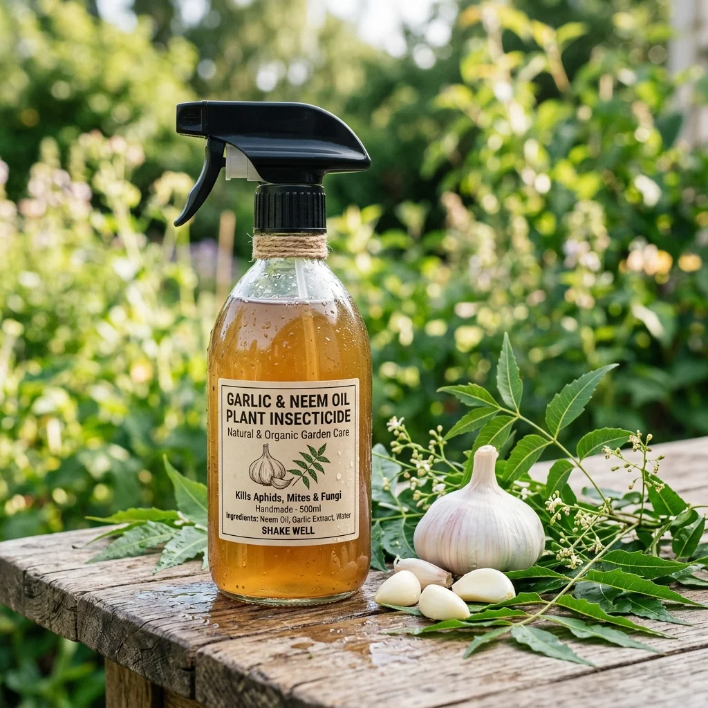

Chargement de la sagesse ancestrale...
Artículos Recomendados
 Nourriture
46K
Nourriture
46K
Boue d'ortie fermentée (insecticide et engrais)
Apprenez à réaliser une bouillie fermentée à partir d'orties sauvages, le meilleur insecticide préventif écologique et activateur de défense des plantes de jardin.

Nourriture 33KRépulsif à l'huile d'ail et de neem biologique
Protégez votre jardin ou vos plantes d'intérieur des parasites courants tels que les pucerons et les aleurodes avec un spray naturel à base d'ail fermenté et d'huile de Neem pure.
 Nourriture
30K
Nourriture
30K
Engrais liquide pour la peau de banane et de café
Un engrais maison riche en potassium et en azote formulé pour favoriser la floraison de vos plantes d'intérieur et d'extérieur en réutilisant les déchets organiques.
Comentarios y Experiencias